异世界悠闲农家
內藤騎之介 · 小説家になろう n3289ds · 简体中文翻译
导读
本站是《异世界悠闲农家》（異世界のんびり農家）的简体中文阅读站。文库版 1–17 卷取自既有简体译本；18–21 卷正文为本站 Web 续译，插图取自民间简体文库版（非官方译本）；Web 版 819 话起的续译以日文 Web 原文为本、以文库版译名为基准校订，并与站内译名字典保持一致。
文库版全卷
第 1 卷
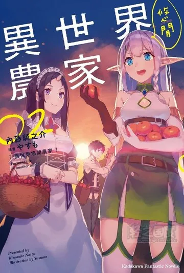
第 2 卷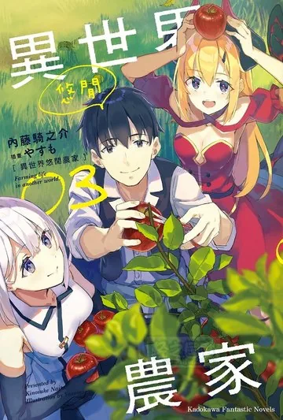
第 3 卷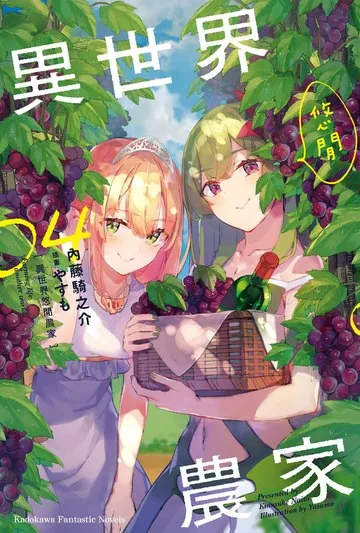
第 4 卷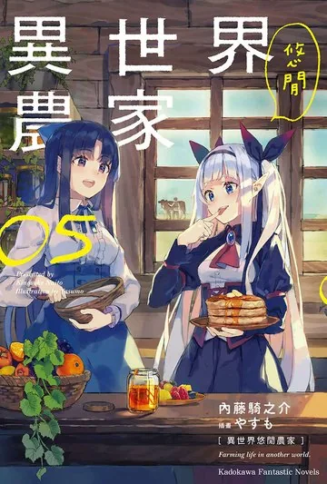
第 5 卷 第 6 卷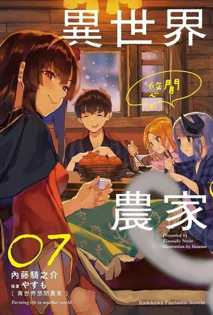
第 7 卷 第 8 卷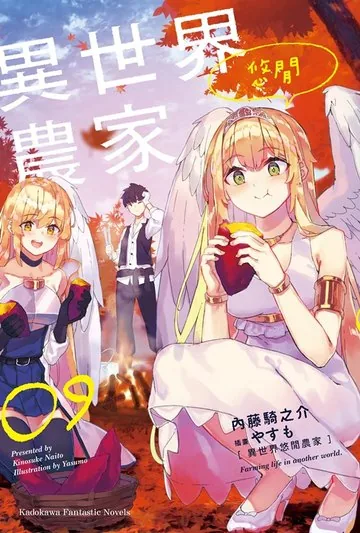
第 9 卷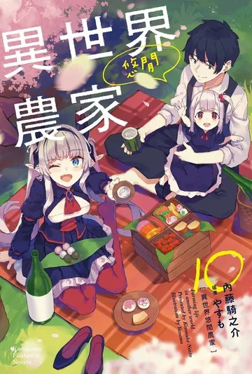
第 10 卷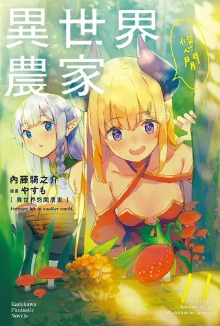
第 11 卷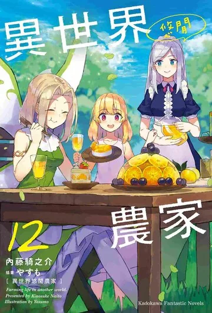
第 12 卷 第 13 卷 第 14 卷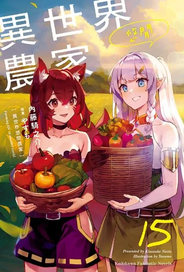
第 15 卷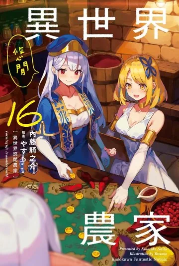
第 16 卷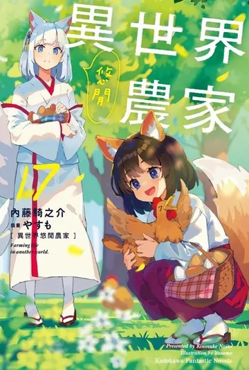
第 17 卷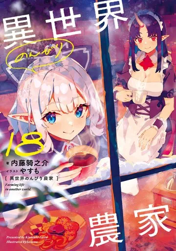
第 18 卷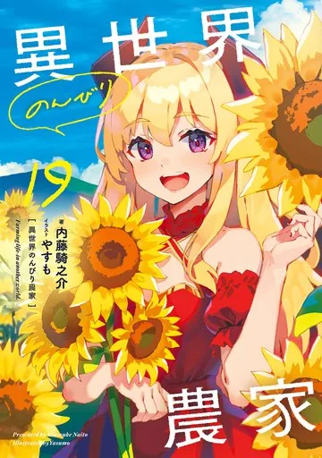
第 19 卷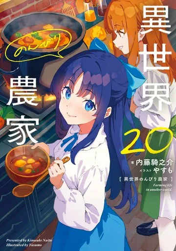
第 20 卷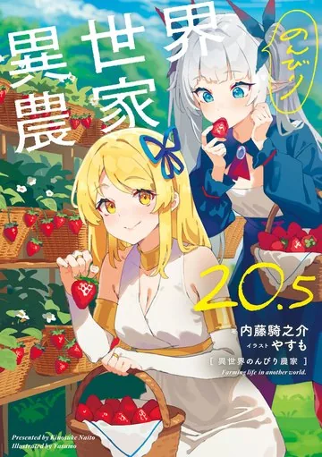
第 20.5 卷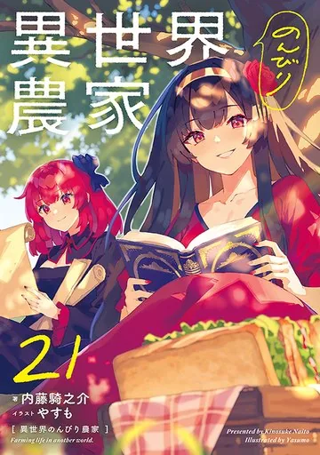
第 21 卷卷目与 Web 话对应
| 卷 | 章 / 节 | 字数 | 对应 Web 话 | 阅读 |
|---|---|---|---|---|
| 第 1 卷 | 7 / 62 | 14.2 万 | 约 1–69 话 | 进入 |
| 第 2 卷 | 7 / 36 | 13.4 万 | 约 70–118 话 | 进入 |
| 第 3 卷 | 7 / 40 | 12.9 万 | 约 119–165 话 | 进入 |
| 第 4 卷 | 7 / 31 | 12.1 万 | 约 166–206 话 | 进入 |
| 第 5 卷 | 7 / 24 | 11.1 万 | 约 207–239 话 | 进入 |
| 第 6 卷 | 7 / 33 | 11.6 万 | 约 240–286 话 | 进入 |
| 第 7 卷 | 7 / 39 | 11.7 万 | 约 287–336 话 | 进入 |
| 第 8 卷 | 7 / 36 | 11.9 万 | 约 337–387 话 | 进入 |
| 第 9 卷 | 7 / 34 | 12.5 万 | 约 388–442 话 | 进入 |
| 第 10 卷 | 7 / 35 | 12.2 万 | 约 443–488 话 | 进入 |
| 第 11 卷 | 7 / 33 | 11.7 万 | 约 489–533 话 | 进入 |
| 第 12 卷 | 7 / 36 | 11.7 万 | 约 534–582 话 | 进入 |
| 第 13 卷 | 7 / 35 | 11.1 万 | 约 583–630 话 | 进入 |
| 第 14 卷 | 7 / 44 | 11.4 万 | 约 631–678 话 | 进入 |
| 第 15 卷 | 7 / 20 | 11.1 万 | 约 679–724 话 | 进入 |
| 第 16 卷 | 7 / 42 | 12.0 万 | 约 725–771 话 | 进入 |
| 第 17 卷 | 8 / 22 | 12.6 万 | 约 772–818 话 | 进入 |
| 第 18 卷 | 6 / 55 | 13.4 万 | 819–867 话 | 进入 |
| 第 19 卷 | 6 / 52 | 13.1 万 | 868–913 话 | 进入 |
| 第 20 卷 | 6 / 51 | 13.7 万 | 914–960 话 | 进入 |
| 第 20.5 卷 | 6 / 68 | 9.6 万 | 番外短篇集（无 Web 对应） | 进入 |
| 第 21 卷 | 6 / 52 | 12.1 万 | 961–1012 话 | 进入 |
Web 18 卷及之后继译
| 范围 | 话数 | 阅读 |
|---|---|---|
| 第 819–858 话 | 40 | 从第 819 话开始 |
| 第 859–898 话 | 40 | 从第 859 话开始 |
| 第 899–938 话 | 40 | 从第 899 话开始 |
| 第 939–978 话 | 40 | 从第 939 话开始 |
| 第 979–1018 话 | 40 | 从第 979 话开始 |
| 第 1019–1058 话 | 40 | 从第 1019 话开始 |
| 第 1059–1094 话 | 36 | 从第 1059 话开始 |
登场人物
火乐
小黑 & 小雪
露露西·露
安
座布团
阳子
乌尔莎
阿尔弗雷德
哈克莲
莉亚
蒂雅
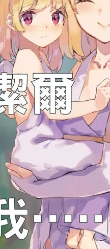
蒂洁尔 比杰尔 格鲁夫 始祖 德斯 优莉 德莱姆 贝尔 文官少女组 火一郎 戈尔 达尬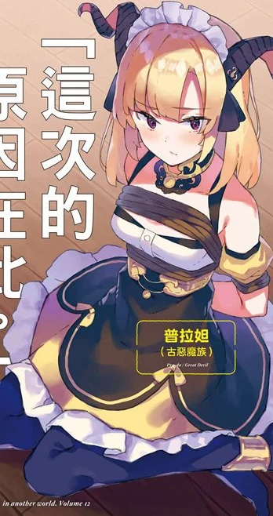
普拉妲 米优 薇尔莎 琪亚比特 格兰玛莉亚 古拉儿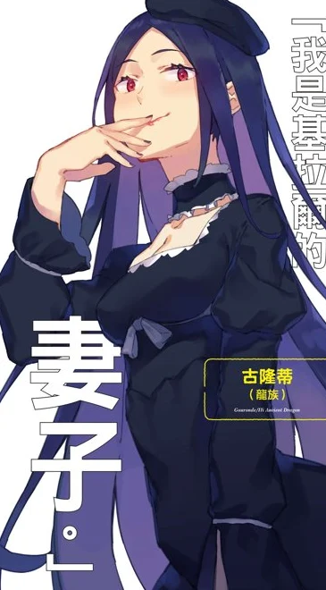
古隆蒂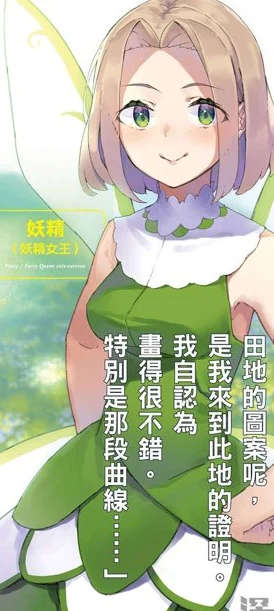
妖精女王 芙修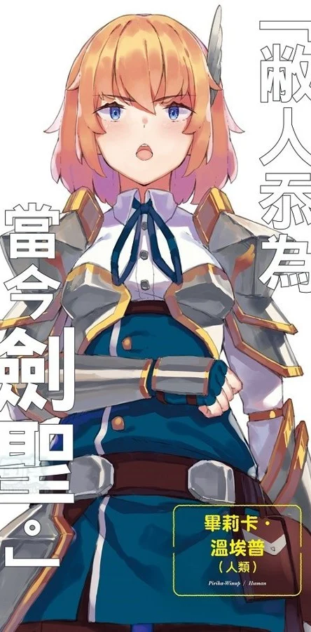
毕莉卡 葛拉兹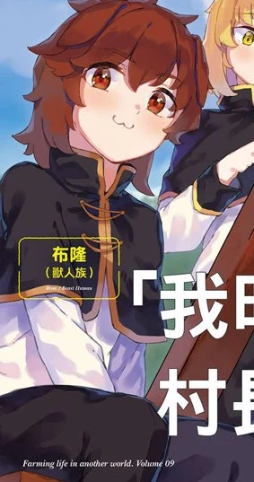
布隆 芙萝拉 巨人族 席尔 古吉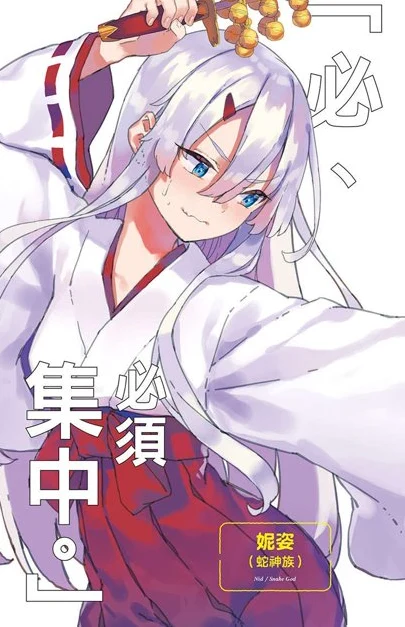
妮姿 多诺邦 蓝登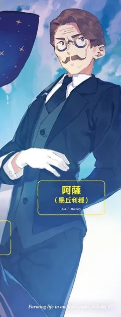
阿萨 一重 赛娜 芽 莉芙 & 莉莉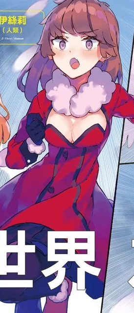
伊丝莉 荷 莉格涅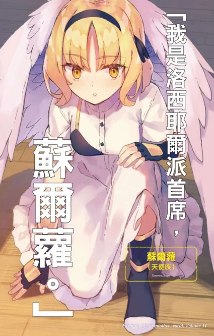
苏尔萝 拉姆莉亚斯 德麦姆 古露瓦尔德 葛菈法伦 库兹汀 创造神 魔神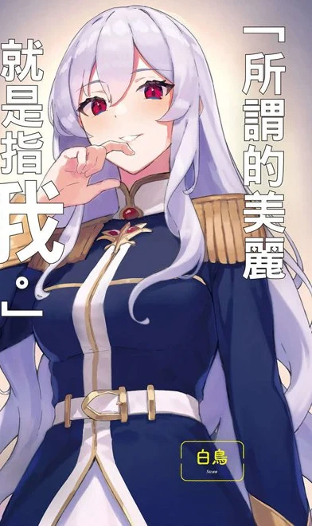
白天鹅 海赛儿 佛格马 廓恩 萝娜娜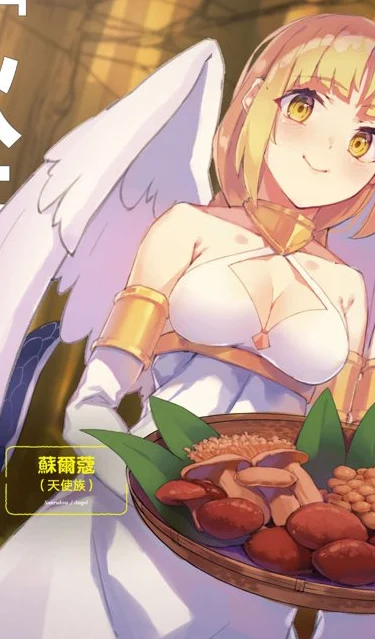
苏尔蔻 伊雷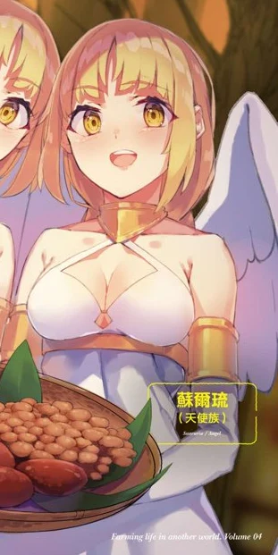
苏尔琉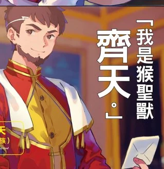
齐天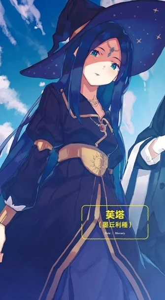
芙塔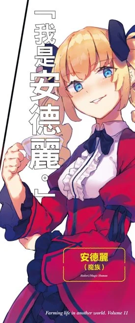
安德丽 加尔加鲁 琪莉莎娜 菈夏希 黑天鹅 拉丝蒂 莉婕 & 莉塔 芙劳蕾姆 戈登 伊古 杰克 & 莫尔特 马姆 姬哈特洛伊 死灵王 茱涅亚 莉芙 纳夫 阿蕾夏 希德尔托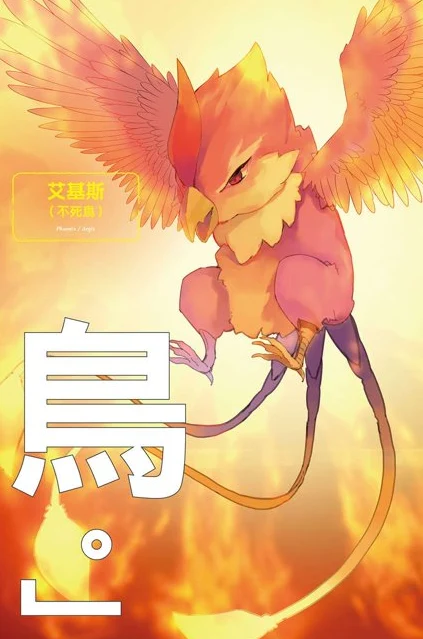
艾基尔 高等精灵族 海芙利古塔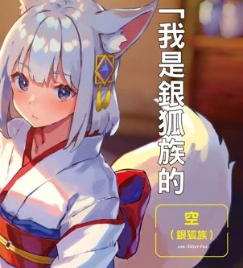
空 廓伦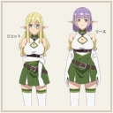
莉柯特 & 莉丝 马克斯贝尔加克 欧洁丝 托席菈相关链接
- 译名字典：1171 条对照
- 翻译技术：TMX 记忆库与人工作业
- EPUB 下载：续译分卷与文库版
- 免责声明：点击查看
- 日文 Web 版原文：https://ncode.syosetu.com/n3289ds/
最后更新：2026-10-26 23:38:24